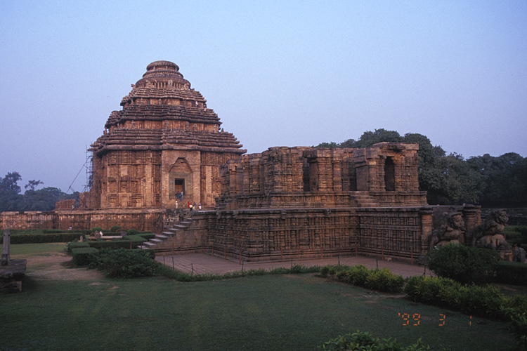
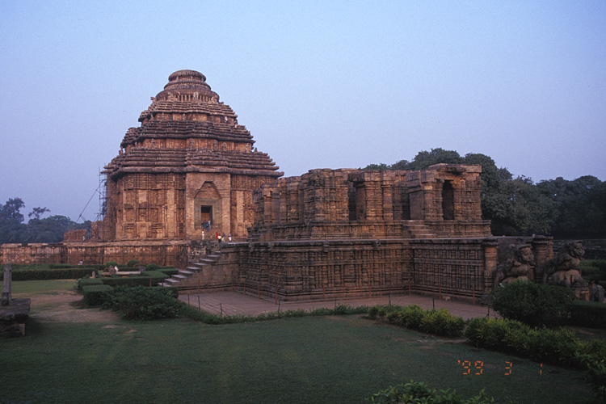
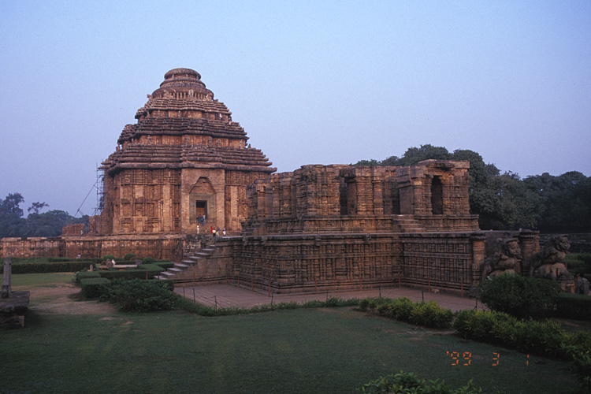
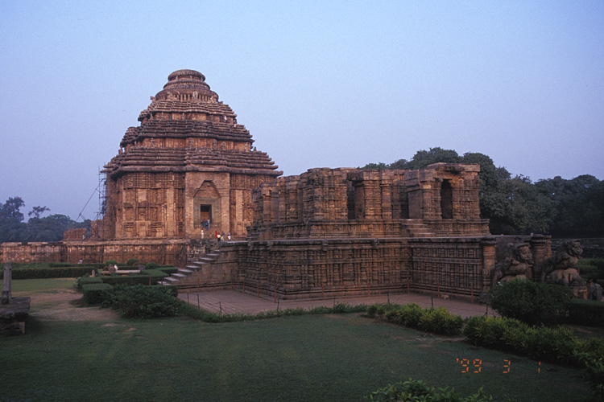

The spiritual air in the country humbly carries the fragrance of Karma, Dharma and most importantly Forgiveness. A secular country under whose shelter dwells multiple religions in utmost peace and harmony, India can rightly be called the ‘Land of Faith’. Trudge through the mighty mountains and you shall experience divine presence or traverse through the meandering alleys, where spirituality combined with history waits to greet your spiritually thirsty souls. The pious soil of the country constantly keeps you in contact with a Supreme Power that dwells in different forms. The existence of a large number of temples, mosques, churches, gurudwaras and monasteries in India beckons the traveler to visit a country that is tolerant, spiritual and most of all diverse yet united.
Having an upper hand in the country, spirituality has propelled many ordinary destinations into significant religious places in India. As a result, along with a large number of pilgrims that visit these religious destinations once a year, many travel enthusiasts have started to throng these hubs. Tourism has grown manifold and so has the fame of India. Let us together get acquainted to a different and vital side of the country and learn about these fascinating religious tourism places in India.

From high up in the mountains, Mata Vaishno Devi calls out to her devotees… Situated on the Trikuta Hills in Jammu, the abode of Mata Vaishno is amongst the most popular pilgrimage in India. Experience an indescribable delight in taking an arduous trek that further leads to the caves where the goddess presides over and bestows countless blessings. Beautiful landscape, pervading divinity and thrilling adventure… this is one journey in India that will remain etched in your memories forever.Vaishno Devi , also known as Mata Rani, Trikuta and Vaishnavi, is a manifestation of the Hindu Goddess Mata Adi Shakti, also known as Goddess Mahalakshmi.
The words "Maa" and "Mata" are commonly used in India for "mother", and thus are often heavily used in connection with Vaishno Devi.Vaishno Devi Mandir is a Hindu temple dedicated to the Hindu Goddess Mahalakshmi, located in Katra at the Trikuta Mountains within the Indian union territory of Jammu and Kashmir.
The unparalleled reflection of the pious golden edifice on the ambrosial nectar (lake) and the horde of pilgrims loitering in the shrine complex urge one to visit this popular religious place in India. Built by the fourth Sikh Guru- Ramdass Sahib Ji, Gurdwara Harmandir Sahib is the most important Sikh pilgrimage site to visit in India. The golden gilded temple commemorates a number of Sikh historical events. A bringer of peace, the Golden Temple is nothing short of a legacyLocated in the heart of Amritsar, a small walk from the Golden Temple and the public garden of Jallianwala Bagh. Originally used for community meetings and religious discourses, the area became a bloodbath for peaceful protestors on the Vaisakhi day of April 1919.
The best time to visit Amritsar is between November and March when the weather is comparatively pleasant and ideal for sightseeing and visiting the Jallianwala Bagh and Golden Temple.
The masterpiece of Indian architecture, Sun Temple is the epitome of exquisite architecture and unmatched spirituality. Situated in Konark, Odisha, the Sun Temple boasts of a massive size and is an incredible example of genius. The Sun God sitting on a majestic chariot depicts the victory of King Narsimhadeva I (who defeated a number of Muslim invaders). The incredible architecture that includes 12 pairs of carved wheels, hall of offering, imposing pyramidal roof and erotic scenes have been the key driving force for art lovers and travel enthusiast who visit here, thereby making the Sun Temple one of the best places to see on a religious tour in India.
Konark Sun Temple is a 13th-century CE sun temple at Konark about 35 kilometres (22 mi) northeast from Puri on the coastline of Odisha, India. The temple is attributed to king Narasimha deva I of the Eastern Ganga Dynasty about 1250 CE.
Dedicated to the Hindu sun god Surya, what remains of the temple complex has the appearance of a 100-foot (30 m) high chariot with immense wheels and horses, all carved from stone. Once over 200 feet (61 m) high, much of the temple is now in ruins, in particular the large shikara tower over the sanctuary; at one time this rose much higher than the mandapa that remains. The structures and elements that have survived are famed for their intricate artwork, iconography, and themes, including erotic kama and mithuna scenes. Also called the Surya Devalaya, it is a classic illustration of the Odisha style of Architecture or Kalinga Architecture.
An important pilgrimage in India, Jagannath Temple is the finest monument in Odisha. The main deities presiding over the temple are Lord Jagannath, Balabhadra and Goddess Subhadra. Although a popular pilgrimage, Jagannath Temple comes to life during the annual Rath Yatra when a very large number of people throng the temple. The sacred shrine is believed to be the authentic reflection of Indian culture.The Shree Jagannath Temple of Puri is an important Hindu temple dedicated to Lord Jagannath, a form of lord Maha Vishnu , located on the eastern coast of India, at Puri in the state of Odisha. The temple is an important pilgrimage destination.
The present temple was rebuilt from the 10th century onwards, on the site of an earlier temple, and begun by King Anantavarman Chodaganga Deva, first of the Eastern Ganga dynasty.The Puri temple is famous for its annual Ratha yatra, or chariot festival, in which the three principal deities are pulled on huge and elaborately decorated temple cars. These gave their name to the English term Juggernaut. Unlike the stone and metal icons found in most Hindu temples, the image of Jagannath is made of wood and is ceremoniously replaced every twelve or nineteen years by an exact replica.
Reckoned to be the first Dwadash Jyotirlinga (Pillar of Light) of Lord Shiva, Somnath Jyotirlinga in Gujarat holds an important place in India. The survivor of many attacks in the past, Somnath Jyotirlinga has been a source of divinity and spirituality for many Hindu pilgrims. Situated on the shores of Arabian Sea, this sacred shrine calls out to devotees from afar and blesses innumerable times. Feel the power of spirituality and lose yourself in the devotion at this holy place in India.
The Somnath temple located in Prabhas Patan near Veraval in Saurashtra on the western coast of Gujarat, is believed to be the first among the twelve jyotirlinga shrines of Shiva. It is an important pilgrimage and tourist spot of Gujarat. Reconstructed several times in the past after repeated destruction by several Muslim invaders and rulers as well as the Portuguese,the present temple was reconstructed in Chaulukya style of Hindu temple architecture and completed in May 1951. The reconstruction was started under the orders of the Home Minister of India Vallabhbhai Patel and completed after his death.

Humility is the greatest virtue and Jainism preaches just that! Situated in Ranakpur village in Rajasthan, Ranakpur is one of the best places of Indian pilgrimage tourism. The Ranakpur temple is one of the oldest Jain temples in India and thus holds a lot of importance for devotees. Pilgrims from all over the world pay a visit to this temple that has majestic architecture and beautiful surroundings. Imbue yourself in the tranquil ambiance here and you shall definitely seek divinity that does not match anything ordinary.
Ranakpur is a village located in Desuri tehsil near Sadri town in the Pali district of Rajasthan in western India. It is located between Jodhpur and Udaipur. 162 km from Jodhpur and 91 km from Udaipur, in a valley on the western side of the Aravalli Range. The Nearest Railway Station to reach Ranakpur is Falna Railway station. Ranakpur is one of the most famous places to visit in Pali, Rajasthan. Ranakpur is easily accessed by road from Udaipur.Ranakpur is widely known for its marble Jain temple, said to be the most spectacular of the Jain temples.There is also a small Sun temple which is managed by the Udaipur royal family trust.
The earthly abode of Lord Venkateswara (incarnation of Vishnu), Tirumala Venkateswara Temple is situated on the last hill of the Seshachalam range in Tirupati, Andhra Pradesh. Like many temples in south India, this holy temple is known for its exquisite architecture. It is also amongst the most visited Hindu temples in India as it is said that the temple attracts 60,000 pilgrims each day. One must attend the Puja that is accompanied by many hymns and praises giving it a touch of unmatched divinity. The Laddoo Prasadam is yet another attraction of Tirumala Venkateswara Temple.
Venkateswara Temple is a landmark Vaishnavite temple situated in the hill town of Tirumala at Tirupati in Chittoor district of Andhra Pradesh, India. The Temple is dedicated to Lord Sri Venkateswara, an incarnation of Vishnu, who is believed to have appeared here to save mankind from trials and troubles of Kali Yuga. Hence the place has also got the name Kaliyuga Vaikuntham and the Lord here is referred to as Kaliyuga Prathyaksha Daivam. The temple is also known by other names like Tirumala Temple, Tirupati Temple, Tirupati Balaji Temple. Lord Venkateswara is known by many other names: Balaji, Govinda and Srinivasa.
Situated in one of the most scenic locations in the country, Hemkund Sahib adds charm to religious tour in India. Unlike other Sikh pilgrimages in India, Hemkund Sahib has a pentagonal structure. The scenic beauty of the place is worth mentioning as this shrine is nestled amidst lofty hills that are covered with snow. One shall be stunned with the kind of devotion that the pilgrims show here despite the adverse climatic conditions. The spiritual ambiance at Hemkunt Sahib may pursue you to stay a bit longer here.
Situated at a height of over 15,000 feet above the sea level in the Himalayan ranges of northern India, Sri Hemkunt Sahib has emerged as a popular centre of Sikh Pilgrimage which is visited by thousands of devotees from all over the world every summer. According to Bachitra Natak, the autobiographical account of the tenth Guru, Gobind Singh, it was at Hemkunt 'adorned with seven snow peaks' that he meditated in his previous birth.It was during the thirties of the twentieth century that the place was discovered by Sant Sohan Singh and Bhai Modam Singh. Bhai Vir Singh, Sikh savant and a leading figure of the Singh Sabha movement , played an important role first in helping these two gentlemen by verifying for them the location of the place and later by providing financial support for building a gurudwara at Hemkunt. Collective efforts of Sikh pioneers backed by the community support led to the construction of gurudwaras en route including Gobind Ghat (6,000 feet) and Gobind Dham (10,500 feet).
Khwaja Moinuddin Chishti lay in peace here, listening to people’s wishes and fulfilling them. Once you enter through the gate of the Dargah, a queer peace takes over you. A sacred shrine in Ajmer, Gharib Nawaz Dargah Sharif is visited by millions of devotees every year from all over the world. The Dargah for many reasons captivates one’s heart; there is certainly something that is magical about this place that people from different faith come and worship here. Although the dargah is always crowded, the best time to visit Ajmer Sharif is during the Urs festival. The place comes to life during this festival that is held annually.
Ajmer Sharif Dargah is 2 kilometres (1.2 mi) away from the main central Ajmer Railway station and 500 metres away from the Central Jail and is situated at the foot of the Taragarh hill. It consists of several white marble buildings arranged around two courtyards, including a massive gate known as Nizam Gate donated by the 7th Nizam of Hyderabad Mir Osman Ali Khan and the Akbari Mosque, built by the Mughal emperor Shah Jahan. It contains the domed tomb of the saint.
Religious tour in India would be incomplete if you miss out on Velankanni Church, situated in the Nagapattinam district of Tamil Nadu. Like many gothic style churches Velankanni Church or the Basilica of Our Lady of Good Health has graceful architecture but what attracts tourists the most to this church is the construction history of the Church. Believed to have been built by a Portuguese sailor who survived a violent sea storm as a gratitude to the Supreme Power, this church is indeed one of the important pillars of faith in India. Each year The Feast of the Nativity of Mary is celebrated here and is attended by millions of devotees from around the globe.
Velankanni (Ve?a?ka??i), is a Special Grade Panchayat Town in Nagapattinam district in the Indian state of Tamil Nadu. It lies on the Coromandel Coast of the Bay of Bengal, 350 km south of Chennai (Madras) and 12 km south of Nagapattinam.
Once a port that traded with Rome and Greece,the tiny commercial center gradually lost its importance to the larger city of Nagapattinam. The canal built to link this town with Vedaranyam still lies to the west.
Baba Barfani calls out to his devotees spread all over the world to first take up an enthralling trek and then receive bountiful blessings from him. The holy Amarnath Cave is situated in the beautiful state of Jammu and Kashmir and can only be reached after a rigorous trekking expedition. The cave holds importance as one of the ancient pilgrimages in India. The legend has it that Lord Shiva revealed the secret of immortality to his consort Goddess Parvati here, which was overheard by a pair of pigeons. It is also believed that even today, a pair of pigeon can be seen in the cave. Amarnath is famed for the Linga that is created naturally by ice here every year. The Amarnath Yatra is an annual event in which pilgrims are allowed to trek to the cave temple.
Amarnath cave is a Hindu shrine located in Jammu and Kashmir, India. The cave is situated at an altitude of 3,888 m (12,756 ft),[1] about 141 km (88 mi) from Srinagar, the summer capital of Jammu and Kashmir and reached through Pahalgam town. The shrine forms an important part of Hinduism,[2] and is considered to be one of the holiest shrines in Hinduism.[3] The cave is surrounded by snowy mountains. The cave itself is covered with snow most of the year except for a short period of time in summer when it is open for pilgrims. Hundreds of thousands of Hindu devotees make an annual pilgrimage to the Amarnath cave across challenging mountainous terrain

The birthplace of the Hindu God Krishna, Mathura in the state of Uttar Pradesh can rightly be called a blessed land. Today, the town is dotted with a large number of temples including the Krishna Janmabhoomi Temple that is thronged by a large number of devotees all through the year. However, Janmashtami is one festival during which this small town becomes overcrowded yet full of colors.
Mathura is a city in the Indian state of Uttar Pradesh. It is located approximately 50 kilometres (31 mi) north of Agra, and 145 kilometres (90 mi) south-east of Delhi; about 11 kilometres (6.8 mi) from the town of Vrindavan, and 22 kilometres (14 mi) from Govardhan. It is the administrative centre of Mathura district of Uttar Pradesh. In ancient times, Mathura was an economic hub, located at the junction of important caravan routes. The 2011 Census of India estimated the population of Mathura at 441,894.
In Hinduism, Mathura is believed to be the birthplace of Krishna, which is located at the Krishna Janmasthan Temple Complex.It is one of the Sapta Puri, the seven cities considered holy by Hindus. The Kesava Deo Temple was built in ancient times on the site of Krishna'birthplace.